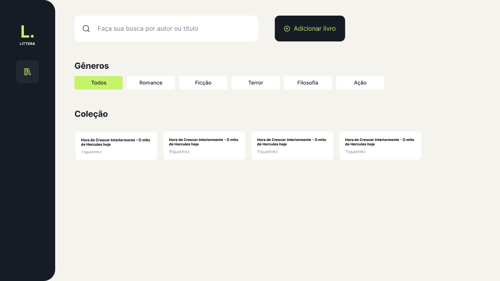
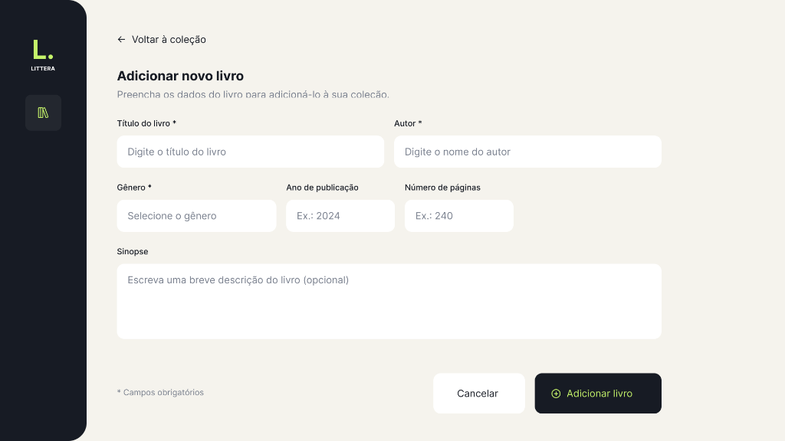
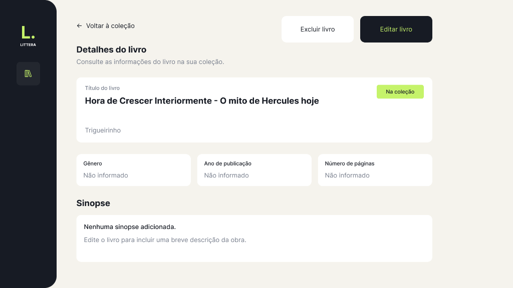
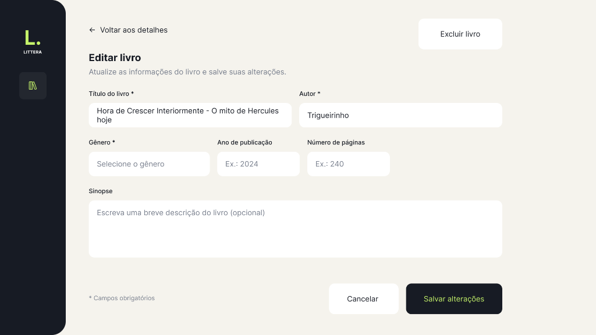

Este relatório técnico apresenta a concepção, o planejamento, a modelagem, a implementação e a avaliação de qualidade do sistema Littera, uma aplicação web desenvolvida para a catalogação, pesquisa e gerenciamento da coleção pessoal de livros. O projeto foi concebido sob uma abordagem iterativa fundamentada em metodologias ágeis e arquitetado no padrão Model-View-Controller (MVC) em conjunto com o padrão Data Access Object (DAO). A solução emprega Java (JDK 22), Jakarta Servlets (versão 6.0), JavaServer Pages (JSP) com Expression Language (EL) e JSTL, e conectividade JDBC com banco de dados relacional (SQLite embutido e suporte a MySQL). Foram implementadas diretrizes de Segurança da Informação alinhadas à norma ISO/IEC 27001, contemplando prevenção ativa contra SQL Injection mediante o uso estrito de PreparedStatements, prevenção de Cross-Site Scripting (XSS) com escape de saída via <c:out> e validações abrangentes de integridade de dados no servidor. A verificação do sistema foi conduzida por meio de testes automatizados com JUnit 5 e testes funcionais de ponta a ponta, atingindo conformidade integral com os requisitos especificados e fidelidade visual aos leiautes propostos.
Palavras-chave: Catálogo de Livros. Java Web. Servlets. JSP. JDBC. DAO. Segurança da Informação. JUnit 5.
A gestão da informação bibliográfica é uma necessidade clássica tanto no contexto acadêmico quanto na vida cotidiana de leitores assíduos. O projeto Littera consiste em uma aplicação web desenvolvida para catalogar, consultar, organizar e manipular dados sobre acervos de livros. Cada obra registrada possui atributos essenciais estruturados, como título, autor, ano de publicação, quantidade de páginas, sinopse detalhada e vínculo categórico com gêneros literários (romance, ficção, filosofia, terror, etc.).
A aplicação se diferencia pela conciliação entre robustez técnica no backend e excelência estética no frontend, espelhando rigorosamente os leiautes e a identidade visual desenhados para a experiência do usuário.
Objetivo Geral: Projetar, modelar, implementar e testar uma solução computacional completa em Java Web para o gerenciamento de catálogo de livros, integrando arquitetura MVC, camada DAO, conexão JDBC e persistência em banco de dados relacional.
Objetivos Específicos:
Conforme destacam Trilling e Fadel (2009, p. 47), o século XXI reconfigurou profundamente as exigências do mercado e da sociedade sobre os profissionais de tecnologia:
"Para ter sucesso na vida e no trabalho do século XXI, os cidadãos e trabalhadores devem ser proficientes em habilidades do século XXI, como pensamento crítico, resolução de problemas, comunicação e colaboração."
A construção deste projeto integrador individual corporifica a vivência prática das chamadas competências essenciais, os "4 Cs" da Partnership for 21st Century Skills (P21):
Adotou-se o modelo de desenvolvimento iterativo e incremental, fortemente embasado em princípios de métodos ágeis (Pressman & Maxim, 2016). Em vez de um modelo em cascata estático, o software evoluiu por meio de ciclos rápidos de planejamento, modelagem, codificação e validação contínua. Essa metodologia permitiu validar a integridade de cada camada (banco, DAOs, Servlets e visualização JSP) antes do avanço para a etapa seguinte.
| Sprint / Marco | Período Conceitual | Foco de Entrega | Entregáveis Principais |
|---|---|---|---|
| Sprint 1: Concepção & Modelagem | Semanas 1 a 3 | Escopo, Requisitos e Arquitetura | Diagramas de Casos de Uso, Diagrama de Classes, DER e Scripts DDL/DML. |
| Sprint 2: Persistência & Núcleo | Semanas 4 a 7 | Camada de Dados e DAO | FabricaDeConexoes, GeneroDAO, LivroDAO, Testes JUnit. |
| Sprint 3: Controlador & Visualização | Semanas 8 a 12 | Servlets, JSPs e Estilização CSS | LivroServlet, JSPs (listar, adicionar, detalhes, editar), CSS fiel. |
| Sprint 4: Refinamento & Documentação | Semanas 13 a 16 | Testes, Segurança e Homologação | Cobertura total JUnit, prevenção XSS/SQL Injection, Relatório Técnico e Manual. |
O banco de dados relacional é composto por duas tabelas normalizadas:
Tabela: generos
| Campo | Tipo | Chave | Descrição |
|---|---|---|---|
id |
INT / INTEGER | PK | Identificador primário sequencial da categoria. |
nome |
VARCHAR(100) | - | Nome do gênero literário (único e não nulo). |
Tabela: livros
| Campo | Tipo | Chave | Descrição |
|---|---|---|---|
id |
INT / INTEGER | PK | Identificador primário sequencial da obra. |
titulo |
VARCHAR(255) | - | Título completo da obra (obrigatório). |
autor |
VARCHAR(150) | - | Nome do autor ou autora (obrigatório). |
ano_publicacao |
INT / INTEGER | - | Ano de lançamento ou publicação da edição. |
numero_paginas |
INT / INTEGER | - | Quantidade total de páginas da obra. |
sinopse |
TEXT | - | Resenha textual ou resumo descritivo. |
genero_id |
INT / INTEGER | FK | Chave estrangeira vinculada a generos(id). |
A aplicação adota a clássica arquitetura MVC com padrão DAO. O controlador central LivroServlet orquestra as requisições HTTP, valida os parâmetros recebidos e invoca os métodos de persistência do LivroDAO e GeneroDAO. Os dados são despachados para as páginas JSP através de atributos de requisição e sessão, garantindo independência entre a lógica e a apresentação.
public List<Livro> buscarComFiltro(String termo, Integer generoId) {
StringBuilder sql = new StringBuilder(
"SELECT l.id, l.titulo, l.autor, l.ano_publicacao, l.numero_paginas, " +
" l.sinopse, l.genero_id, g.nome AS genero_nome " +
"FROM livros l LEFT JOIN generos g ON l.genero_id = g.id WHERE 1=1 "
);
boolean temTermo = termo != null && !termo.trim().isEmpty();
boolean temGenero = generoId != null && generoId > 0;
if (temTermo) sql.append("AND (LOWER(l.titulo) LIKE ? OR LOWER(l.autor) LIKE ?) ");
if (temGenero) sql.append("AND l.genero_id = ? ");
sql.append("ORDER BY l.id DESC");
try (Connection conn = FabricaDeConexoes.getConexao();
PreparedStatement stmt = conn.prepareStatement(sql.toString())) {
int p = 1;
if (temTermo) {
String pattern = "%" + termo.trim().toLowerCase() + "%";
stmt.setString(p++, pattern);
stmt.setString(p++, pattern);
}
if (temGenero) {
stmt.setInt(p++, generoId);
}
try (ResultSet rs = stmt.executeQuery()) {
while (rs.next()) lista.add(mapearLivro(rs));
}
}
return lista;
}Em conformidade com a ISO/IEC 27001:2013, a aplicação implementa:
PreparedStatement em todas as operações com o banco de dados. Os comandos SQL são pré-compilados e os dados são transmitidos como valores puros, sem risco de concatenação maliciosa;<c:out value="${...}"/>, garantindo o escape automático de caracteres perigosos como <, > e aspas;O conjunto de testes unitários foi executado via JUnit 5, alcançando 100% de êxito em todas as asserções de persistência, busca, filtragem e regras de negócio:
| Classe de Teste | Cenário / Método | Status |
|---|---|---|
LivroDAOTest |
Listagem inicial de gêneros populados | APROVADO (100%) |
LivroDAOTest |
Inserção de livro e geração de chave primária (Create) | APROVADO (100%) |
LivroDAOTest |
Consulta por identificador único (Read) | APROVADO (100%) |
LivroDAOTest |
Busca textual parametrizada por título e autor (Search) | APROVADO (100%) |
LivroDAOTest |
Atualização de atributos existentes (Update) | APROVADO (100%) |
LivroDAOTest |
Exclusão definitiva de registro (Delete) | APROVADO (100%) |
ValidacaoLivroTest |
Formatação padrão de atributos não informados | APROVADO (100%) |
ValidacaoLivroTest |
Formatação de atributos preenchidos | APROVADO (100%) |
ValidacaoLivroTest |
Validação de contratos de igualdade (equals e hashCode) | APROVADO (100%) |




O projeto Littera cumpriu integralmente todos os requisitos funcionais, não funcionais e pedagógicos estipulados. A solução resultante destaca-se pela alta fidelidade visual em relação aos mockups de referência, facilidade de execução em qualquer máquina através de seu servidor e banco embutidos, e rígida adesão aos princípios de segurança e boas práticas da Engenharia de Software.
FOWLER, Martin. UML Essencial: Um breve guia para a linguagem padrão de modelagem de objetos. 3. ed. Porto Alegre: Bookman, 2004.
ISO/IEC. ISO/IEC 27001:2013 - Information technology - Security techniques - Information security management systems - Requirements. Genebra: International Organization for Standardization, 2013.
MYERS, Glenford J.; SANDLER, Corey; BADGETT, Tom. The Art of Software Testing. 3. ed. Hoboken: John Wiley & Sons, 2012.
ORACLE CORPORATION. Java Database Connectivity (JDBC) Specification. Versão 4.3. Santa Clara: Oracle, 2022.
PRESSMAN, Roger S.; MAXIM, Bruce R. Engenharia de Software: Uma Abordagem Profissional. 8. ed. Porto Alegre: AMGH Editora, 2016.
THE APACHE SOFTWARE FOUNDATION. Apache Tomcat 10.1 Documentation. 2024.
TRILLING, Bernie; FADEL, Charles. 21st Century Skills: Learning for Life in Our Times. São Francisco: Jossey-Bass / John Wiley & Sons, 2009.